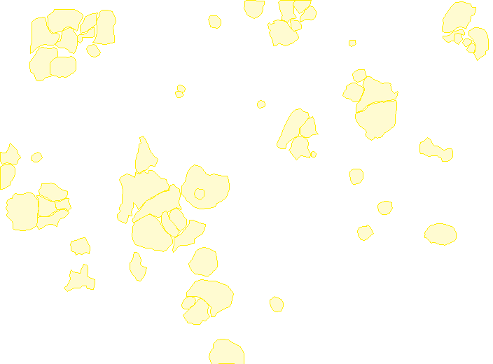
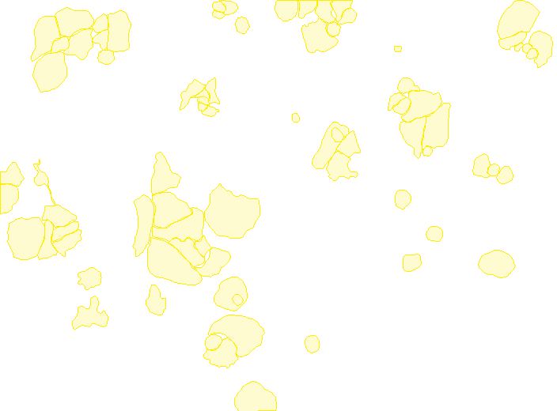

30 photos appear in both groups. The same photo has different versions of its labels. Familiar examples can make evaluation less reliable.
I built a Python tool that checks the images and cell labels in Sartorius’ public LIVECell dataset, then gives scientists a clear list of examples to review.

A172_Phase_A7_1_01d04h00m_3.tif1 supplied label · 704 × 520 px
1,662,447
✓ 0 missing images in 5,387 image records
5,239
100% matched to a local file
30
5.3% of val train ∩ val
9
≤ 10 labels issue #21
118
kept issue #14
The nine upstream-reported sparse images, placed in each method’s first 10 of 3,067.
The held-back test split shares 0 filenames with the other two; only validation scores are affected.
Reported upstream in issue #21; each one is present in this snapshot with ≤ 10 supplied labels.


30 photos appear in both groups. The same photo has different versions of its labels. Familiar examples can make evaluation less reliable.
9 reported images have ten or fewer labels. Review them before using them as training examples; a low count alone does not prove an error.
PythonpandasDuckDBscikit-learnpytest
Both findings were first reported on GitHub (#26, #21). My tool reproduces them from the raw files and tracks them with evidence.
Pick an image and show or hide its cell labels. Flagged images come first, then comparison images.
Choose an example from the list above to see its image, evidence and recommended review action.
Verified dataset snapshot · 17 October 2026
Loading the illustrated example selection…
Loading…
Each one shows what was found, why it matters, what is uncertain, and what a person should do next.
A fair check should use images the model has not already learned from.
Learning grouptraining split
Checking groupvalidation split
These are the same source image. It appears in both groups, each time with a different version of its cell labels.
Think of checking a student with a question they already practised. Familiar examples can make the result look better than it would on new ones.
Keep each source image in one group for this evaluation protocol, and record how the groups were chosen. Preserve the original data so the change can be checked.
This overlap is called data leakage. It affects validation scores; the separate final test group had no overlapping filenames with either group. The dataset authors annotated some images twice and kept both versions (issue #14); here the two versions ended up in different groups. This project has not measured the effect on a model’s results.
The photo and its labels should tell the same story. Here, most visible cells have no supplied label.
Showing the one labelled cell.
Nine previously reported images have ten or fewer labelled cells. Each needs review; a low count alone does not prove an error.
Loading the audit record…
Download the known-case regression record · Read the original report and author response
Four ordering methods compared at the same review budget. Both tests are defined by label count, so they favour the simple counting rule by design.
ROC AUC when labels are removed on purpose; 0.5 is chance. Mean over seeds 7, 42 and 101.
Loading the measured comparison…
Every review-pool candidate, the evidence files, and how this dashboard was built.
Loading the complete ranking table…
Loading…
The report, rankings and image previews use the same recorded dataset snapshot.